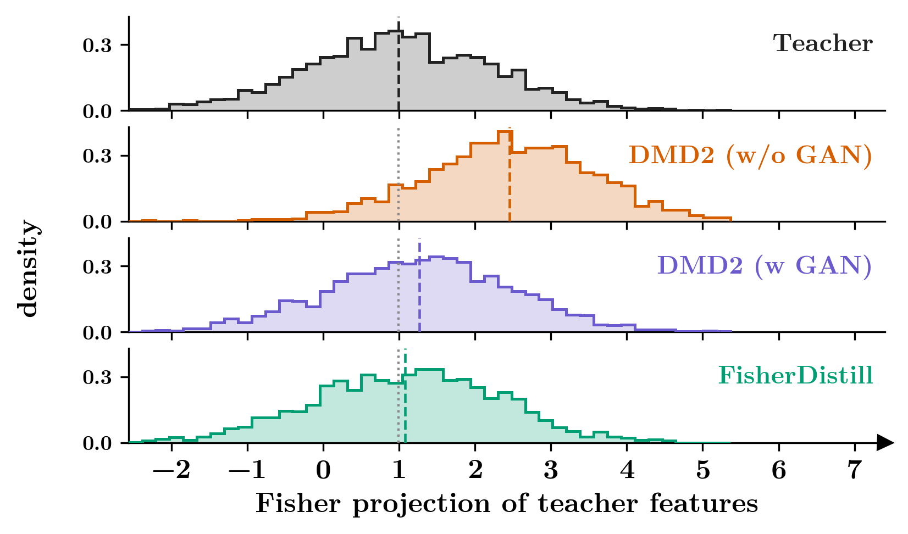
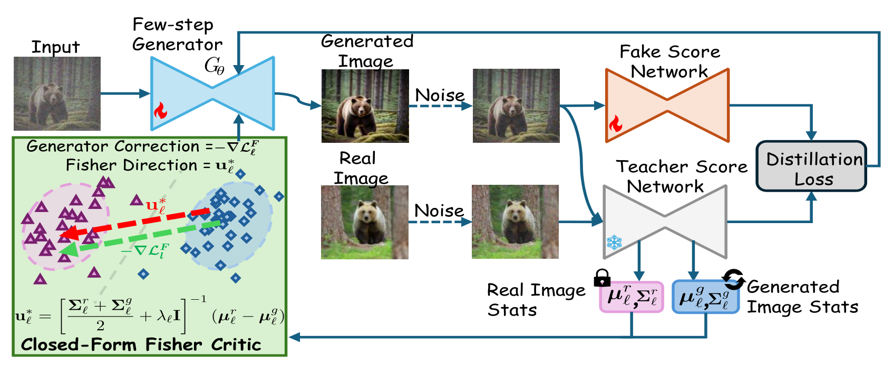
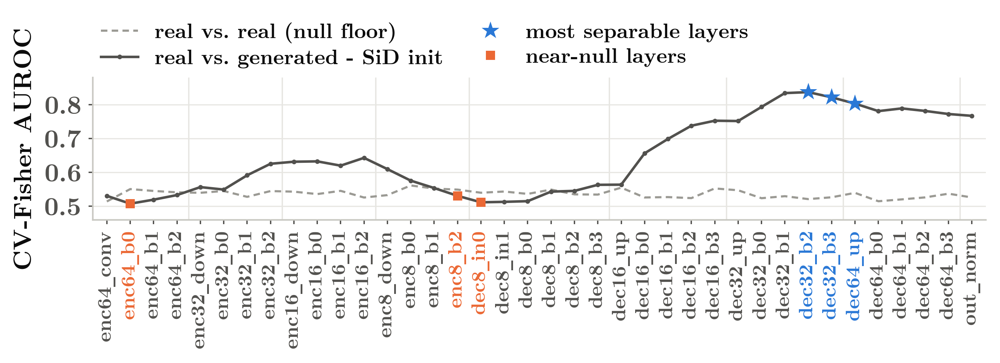
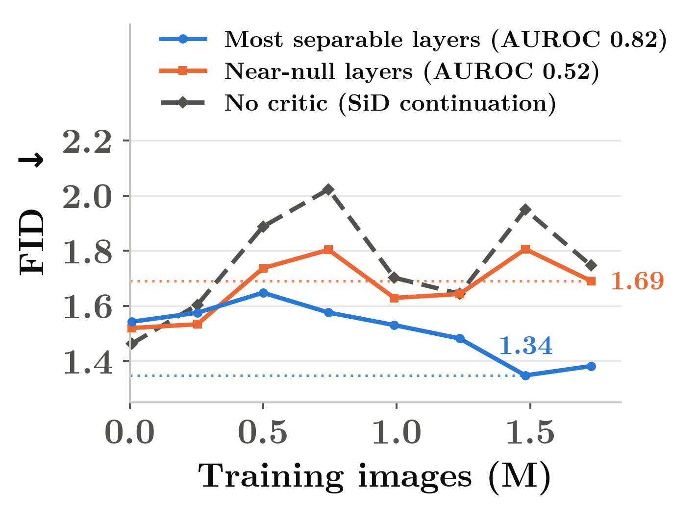
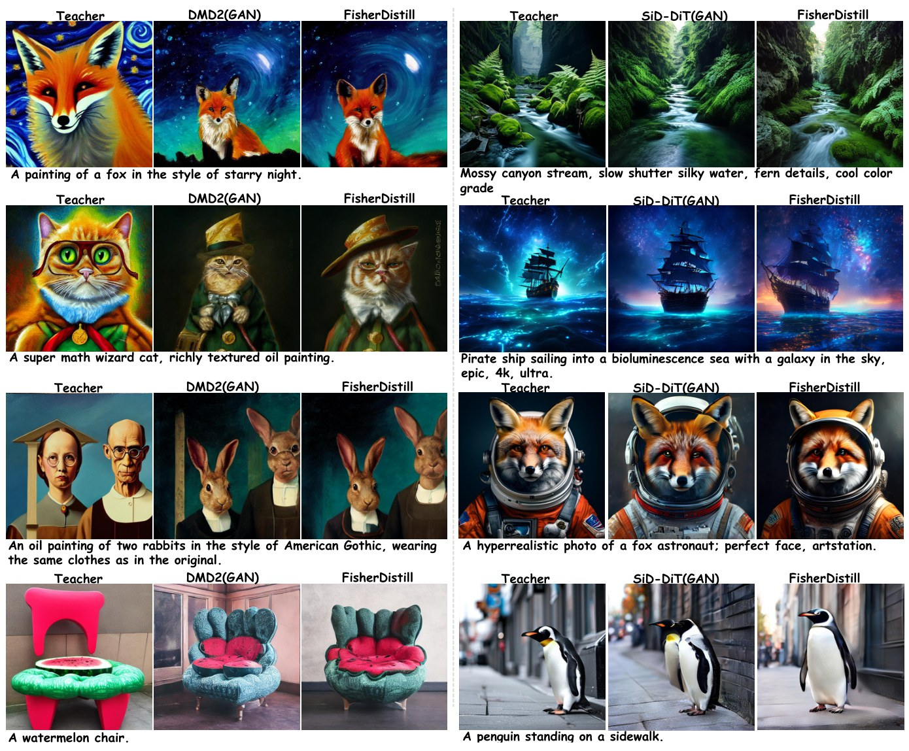
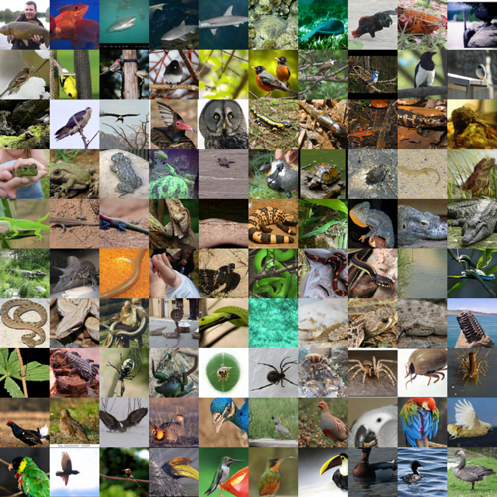

Abstract
Recent advances in diffusion distillation have enabled high-quality image generation in only one or a few network function evaluations (NFEs). Despite their efficiency, aggressively distilled generators often retain a residual distribution gap from their multi-step teachers, motivating recent methods to introduce adversarial refinement with a learned discriminator. In this work, we ask whether such refinement necessarily requires a learned adversarial discriminator. We introduce FisherDistill, a simple alternative based on Fisher linear discriminant analysis. Using intermediate representations from the frozen teacher, we estimate the first- and second-order statistics of real and generated samples and derive a closed-form Fisher direction that maximally separates their feature distributions relative to within-class variation. This direction provides a lightweight refinement signal that complements the original distillation objective without requiring an additional adversarial discriminator or its optimization loop. Across multiple distillation frameworks, our approach consistently improves generation quality over their respective distilled baselines and substantially closes the gap to adversarially refined counterparts.
A residual gap the teacher can see
Aggressive one- or few-step distillation leaves a residual distribution gap from the multi-step teacher. That gap is visible in the frozen teacher's own features: projected onto a held-out Fisher direction, one-step DMD2 without a GAN drifts away from the teacher, and the closed-form Fisher refinement brings it back.

Method

Closed-form Fisher critic
At a fixed noise level tF, each sample is passed through the frozen teacher; for every selected layer ℓ the feature fℓ concatenates the per-channel spatial mean and standard deviation (or token statistics for DiTs). With real and generated means μrℓ, μgℓ and covariances Σrℓ, Σgℓ:
Under a shared-covariance Gaussian model, the margin rℓ(f) is exactly the real-to-generated log-density ratio, so DFℓ is a closed-form counterpart of a learned discriminator. Its per-sample gradient has the same structure as adversarial refinement: a sample-dependent weight 1 − DFℓ, the diffusion scaling, and a corrective direction obtained by propagating u*ℓ through the frozen teacher, all without critic optimization.
Online statistics with a lagged critic
Real statistics are computed once and frozen. Generated first and second moments are tracked with an EMA, and the critic is one step lagged: it is built from statistics through iteration k−1 and held fixed while scoring the current batch, so it is never estimated from the features it scores.
Where to read the teacher


Results
Class-conditional ImageNet 64×64, EDM teacher
| Method | NFE | FID ↓ | Prec. ↑ | Rec. ↑ |
|---|---|---|---|---|
| EDM teacher (VP, SDE) | 511 | 1.32 | ||
| DMD-based | ||||
| DMD | 1 | 2.64 | 0.76 | 0.59 |
| DMD2† (GAN) | 1 | 1.42 | 0.74 | 0.60 |
| RealUID† | 1 | 3.07 | 0.74 | 0.58 |
| FisherDistill | 1 | 1.40 | 0.74 | 0.62 |
| SiD-based | ||||
| SiD (α = 1.2) | 1 | 1.54 | 0.74 | 0.63 |
| SiD²A† (GAN, α = 1.0) | 1 | 1.31 | 0.74 | 0.62 |
| RealUID† | 1 | 1.45 | 0.74 | 0.62 |
| FisherDistill | 1 | 1.34 | 0.76 | 0.63 |
† Reproduced with the official code under a matched training budget.
Text-to-image, zero-shot COCO-2014
| Method | NFE | FID ↓ | CLIP ↑ | GenEval ↑ | Aesth. ↑ | HPSv2 ↑ | ImgRwd ↑ | PickScore ↑ |
|---|---|---|---|---|---|---|---|---|
| Stable Diffusion v1.5 · DMD2 | ||||||||
| SD v1.5 teacher | 50 | 8.60 | 0.310 | 0.442 | 5.466 | 0.267 | 0.096 | 20.61 |
| DMD | 1 | 9.28 | 0.302 | 0.347 | 5.333 | 0.255 | −0.410 | 20.01 |
| DMD2† (GAN) | 1 | 8.58 | 0.300 | 0.343 | 5.414 | 0.256 | −0.378 | 20.00 |
| RealUID† | 1 | 9.37 | 0.303 | 0.352 | 5.346 | 0.256 | −0.332 | 20.06 |
| FisherDistill | 1 | 8.46 | 0.304 | 0.348 | 5.393 | 0.257 | −0.350 | 20.07 |
| SD3-Medium · 1.x-Distill | ||||||||
| SD3-Medium teacher | 28 | 23.39 | 0.330 | 0.708 | 5.370 | 0.294 | 1.027 | 22.50 |
| 1.x-Distill Stage I† | 2 | 32.35 | 0.329 | 0.651 | 5.283 | 0.284 | 0.985 | 22.15 |
| 1.x-Distill Stage II† (GAN) | 2 | 30.20 | 0.330 | 0.655 | 5.430 | 0.288 | 0.998 | 22.59 |
| RealUID† | 2 | 34.03 | 0.326 | 0.641 | 5.101 | 0.279 | 0.862 | 21.99 |
| FisherDistill | 2 | 29.54 | 0.330 | 0.682 | 5.483 | 0.294 | 1.059 | 22.37 |
| SANA 0.6B · SiD-DiT | ||||||||
| SANA 0.6B teacher | 20 | 26.38 | 0.338 | 0.651 | 5.730 | 0.311 | 0.999 | 22.50 |
| SiD-DiT | 1 | 28.94 | 0.323 | 0.594 | 5.751 | 0.278 | 0.709 | 21.51 |
| SiD²A-DiT† (GAN) | 1 | 34.13 | 0.298 | 0.486 | 5.383 | 0.244 | 0.287 | 21.00 |
| RealUID† | 1 | 31.87 | 0.320 | 0.590 | 5.740 | 0.274 | 0.688 | 21.46 |
| FisherDistill | 1 | 25.24 | 0.326 | 0.597 | 5.744 | 0.286 | 0.820 | 21.80 |
| SANA 1.6B · SiD-DiT | ||||||||
| SANA 1.6B teacher | 20 | 26.83 | 0.334 | 0.652 | 5.840 | 0.312 | 1.054 | 22.56 |
| SiD-DiT | 1 | 28.86 | 0.325 | 0.581 | 5.881 | 0.285 | 0.880 | 21.71 |
| SiD²A-DiT† (GAN) | 1 | 28.58 | 0.323 | 0.615 | 5.889 | 0.289 | 0.883 | 21.81 |
| RealUID† | 1 | 34.28 | 0.322 | 0.578 | 5.916 | 0.279 | 0.867 | 21.60 |
| FisherDistill | 1 | 26.73 | 0.326 | 0.603 | 5.816 | 0.289 | 0.884 | 21.73 |
† Trained with the official code under a matched training budget. Each group uses its base framework's own evaluation protocol; compare only within a group. The one-step FisherDistill SANA models match or surpass their 20-step teachers in FID (25.24 vs. 26.38; 26.73 vs. 26.83).
Samples
One-step text-to-image

ImageNet 64×64, uncurated, one step
One sample per class for classes 0–99, identical noise across models.

BibTeX
Coming with the arXiv release.